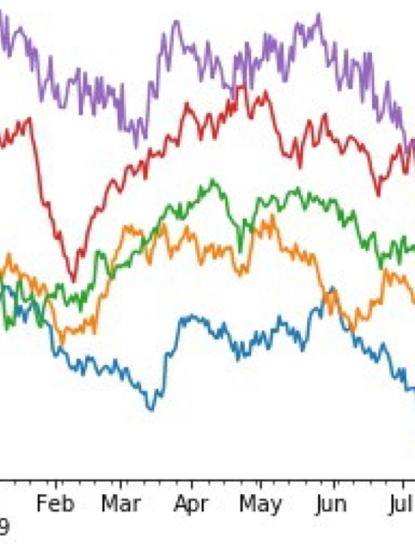
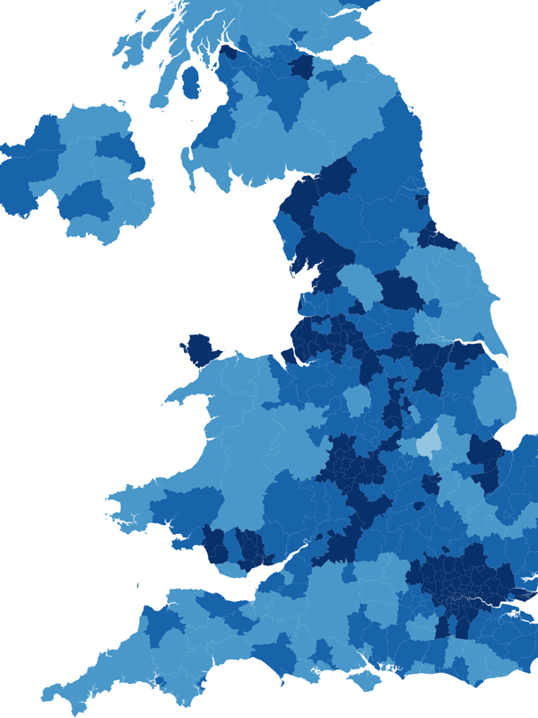
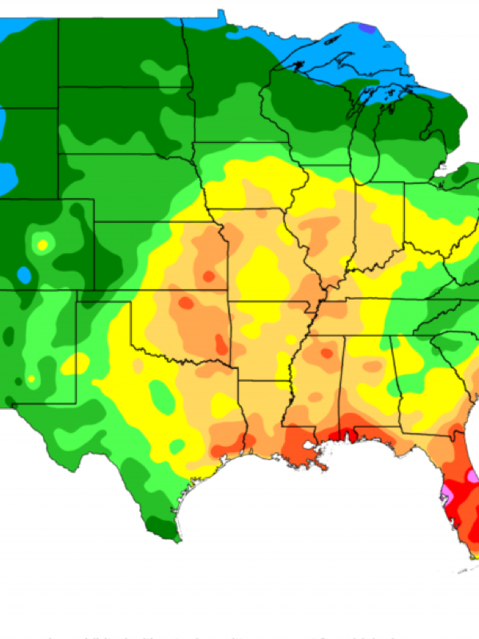
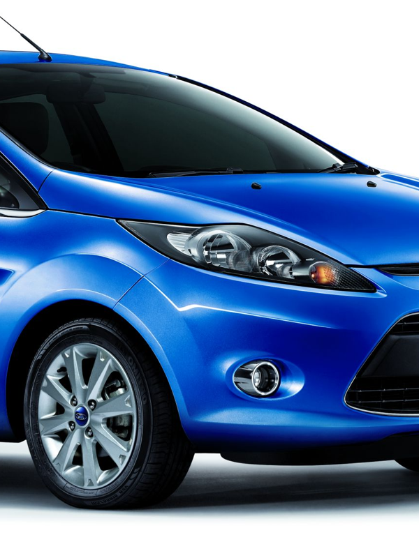

トピックモデリング
Facebookに掲載されるニュース記事を活用したサービスの手法および実装を目的としたプロジェクトを行なっています。
Facebook UK 本社
London School of Economics (LSE)


マイクロアレイデータの手法
大量の対象物に対して一度に実験を行うための技術をマイクロアレイと呼びます。 本プロジェクトでは、これらの手法から得られた数千もの遺伝子のデータから、深層学習を用いてパターンを検出する手法を提案しました。
London School of Economics (LSE)



